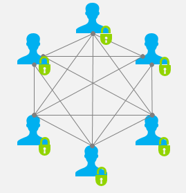

Blockchain là gì?
Về mặt truyền thống, có rất nhiều tổ chức trung gian có nhiệm vụ thu thập và phân phối dữ liệu. Thẳng thắn mà nói, các tổ chức ấy toàn quyền kiểm soát và thao túng mức giá cho số dữ liệu khổng lồ ấy. Trong trường hợp trên, tất cả quyền lực rơi vào các tổ chức trung gian và người sử dụng dịch vụ phải tin tưởng họ để duy trì mối quan hệ tốt và tiếp tục phát triển sản phẩm và tiếp thị người dùng. Blockchain ra đời giúp dữ liệu không bị kiểm soát tập trung (phân tán dữ liệu) và không đặt quá nhiều sự tin tưởng với bất cứ tổ chức trung gian nào.
Blockchain
Blockchain là một cơ sở dữ liệu phân cấp lưu trữ thông tin các khối (block) được liên kết với nhau bằng chuỗi mã hóa (cryptographic hash) và mở rộng theo thời gian. Mỗi khối lưu trữ một mật mã của một khối liên kết trước đó, một con dấu thời gian và bộ dữ liệu về giao dịch.

Blockchain được chia sẻ lên mạng lưới ngang hàng (peer-to-peer network). Mọi máy tính tham gia vào mang lưới đều quản lý blockchain một cách an toàn mà không cần một tổ chức trung gian nào quản lý toàn bộ. Một khi dữ liệu đã được mạng lưới chấp nhận, để thay đổi dữ liệu, cá nhân hay tổ chức phải thay đổi dữ liệu của tất cả các máy tham gia vào mạng lưới của blockchain

Các loại blockchain:
- Blockchain mở (Public blockchain), như Bitcoin, có mạng lưới phân phối rộng rãi, có chữ kí điện tử và có mã nguồn mở được cộng đồng duy trì. Mọi người đều dễ dàng tham gia blockchain.
- Blockchain được cấp phép (permissioned blockchain) yêu cầu người tham gia phải được phê duyệt trước khi gia nhập hệ thống. Hệ thống có mạng lưới được phân phối rộng rãi, có chữ ký điện tử. Mã nguồn của hệ thống này có thể là mã nguồn mở hoặc không.
- Blockchain riêng tư (Private blockchains) có quy mô nhỏ và không tạo chữ ký điện tử. Các thành viên của hệ thống được kiểm soát chặt chẽ. Hệ thống được tin dùng bởi các hiệp hội có thành viên tín nhiệm cao, trao đổi các thông tin bí mật.
Blockchain được đảm bảo nhờ cách thiết kế sử dụng hệ thống tính toán phân cấp với khả năng chịu lỗi byzantine cao. Vì vậy Blockchain phù hợp để ghi lại những sự kiện, hồ sơ y tế, xử lý giao dịch, công chứng, danh tính và chứng minh nguồn gốc. Việc này có tiềm năng giúp xóa bỏ các hậu quả lớn khi dữ liệu bị thay đổi trong bối cảnh thương mại toàn cầu.
Nguồn gốc
Blockchain được phát minh bởi Satoshi Nakamoto vào năm 2008 và được hiện thực hóa vào năm sau đó như là một phần cốt lõi của Bitcoin, khi công nghệ blockchain đóng vai trò như là một cuốn sổ cái cho tất cả các giao dịch.
Việc phát minh blockchain làm cho Bitcoin trở thành loại tiền tệ kỹ thuật số đầu tiên giải quyết được vấn đề double spending (chi tiêu gian lận khi 1 lượng tiền được dùng 2 lần).